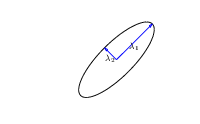
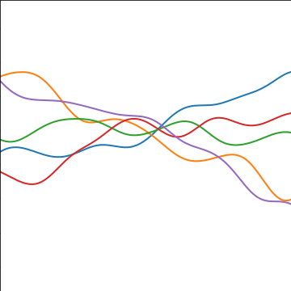
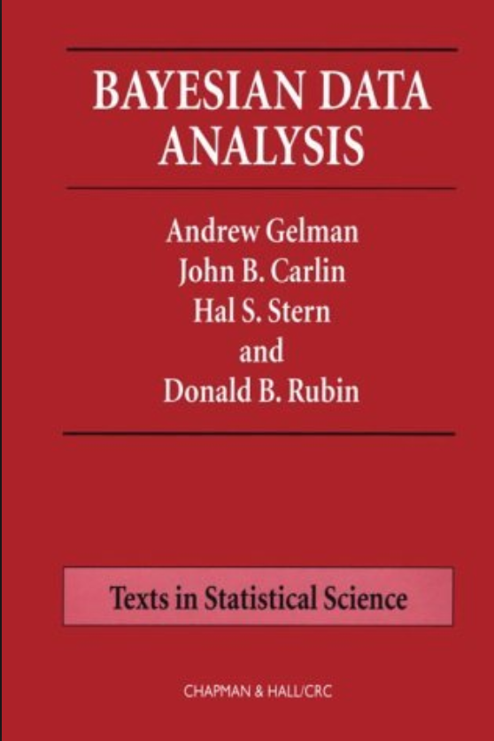

Figure: A key reference for Gaussian process models remains the excellent book "Gaussian Processes for Machine Learning" (Rasmussen and Williams (2006)). The book is also freely available online.
.
.

Figure: A key reference for Gaussian process models remains the excellent book "Gaussian Processes for Machine Learning" (Rasmussen and Williams (2006)). The book is also freely available online.
Rasmussen and Williams (2006) is still one of the most important references on Gaussian process models. It is available freely online.
What is machine learning? At its most basic level machine learning is a combination of
$$\text{data} + \text{model} \xrightarrow{\text{compute}} \text{prediction}$$
where data is our observations. They can be actively or passively acquired (meta-data). The model contains our assumptions, based on previous experience. That experience can be other data, it can come from transfer learning, or it can merely be our beliefs about the regularities of the universe. In humans our models include our inductive biases. The prediction is an action to be taken or a categorization or a quality score. The reason that machine learning has become a mainstay of artificial intelligence is the importance of predictions in artificial intelligence. The data and the model are combined through computation.
In practice we normally perform machine learning using two functions. To combine data with a model we typically make use of:
a prediction function a function which is used to make the predictions. It includes our beliefs about the regularities of the universe, our assumptions about how the world works, e.g. smoothness, spatial similarities, temporal similarities.
an objective function a function which defines the cost of misprediction. Typically it includes knowledge about the world's generating processes (probabilistic objectives) or the costs we pay for mispredictions (empiricial risk minimization).
The combination of data and model through the prediction function and the objectie function leads to a learning algorithm. The class of prediction functions and objective functions we can make use of is restricted by the algorithms they lead to. If the prediction function or the objective function are too complex, then it can be difficult to find an appropriate learning algorithm. Much of the acdemic field of machine learning is the quest for new learning algorithms that allow us to bring different types of models and data together.
A useful reference for state of the art in machine learning is the UK Royal Society Report, Machine Learning: Power and Promise of Computers that Learn by Example.
You can also check my blog post on "What is Machine Learning?"
In practice, we normally also have uncertainty associated with these functions. Uncertainty in the prediction function arises from
There are also challenges around specification of the objective function, but for we will save those for another day. For the moment, let us focus on the prediction function.
Neural networks are adaptive non-linear function models. Originally, they were studied (by McCulloch and Pitts (McCulloch and Pitts 1943)) as simple models for neurons, but over the last decade they have become popular because they are a flexible approach to modelling complex data. A particular characteristic of neural network models is that they can be composed to form highly complex functions which encode many of our expectations of the real world. They allow us to encode our assumptions about how the world works.
We will return to composition later, but for the moment, let's focus on a one hidden layer neural network. We are interested in the prediction function, so we'll ignore the objective function (which is often called an error function) for the moment, and just describe the mathematical object of interest
$$
\mappingFunction(\inputVector) = \mappingMatrix^\top \activationVector(\mappingMatrixTwo, \inputVector)
$$
Where in this case $\mappingFunction(\cdot)$ is a scalar function with vector inputs, and $\activationVector(\cdot)$ is a vector function with vector inputs. The dimensionality of the vector function is known as the number of hidden units, or the number of neurons. The elements of this vector function are known as the activation function of the neural network and $\mappingMatrixTwo$ are the parameters of the activation functions.
In statistics activation functions are traditionally known as basis functions. And we would think of this as a linear model. It's doesn't make linear predictions, but it's linear because in statistics estimation focuses on the parameters, $\mappingMatrix$, not the parameters, $\mappingMatrixTwo$. The linear model terminology refers to the fact that the model is linear in the parameters, but it is not linear in the data unless the activation functions are chosen to be linear.
The first difference in the (early) neural network literature to the classical statistical literature is the decision to optimize these parameters, $\mappingMatrixTwo$, as well as the parameters, $\mappingMatrix$ (which would normally be denoted in statistics by β)1.
In this tutorial, we're going to go revisit that decision, and follow the path of Radford Neal (Neal 1994) who, inspired by work of David MacKay (MacKay 1992) and others did his PhD thesis on Bayesian Neural Networks. If we take a Bayesian approach to parameter inference (note I am using inference here in the classical sense, not in the sense of prediction of test data, which seems to be a newer usage), then we don't wish to fit parameters at all, rather we wish to integrate them away and understand the family of functions that the model describes.
This Bayesian approach is designed to deal with uncertainty arising from fitting our prediction function to the data we have, a reduced data set.
The Bayesian approach can be derived from a broader understanding of what our objective is. If we accept that we can jointly represent all things that happen in the world with a probability distribution, then we can interogate that probability to make predictions. So, if we are interested in predictions, $\dataScalar_*$ at future points input locations of interest, $\inputVector_*$ given previously training data, $\dataVector$ and corresponding inputs, $\inputMatrix$, then we are really interogating the following probability density,
$$
p(\dataScalar_*|\dataVector, \inputMatrix, \inputVector_*),
$$
there is nothing controversial here, as long as you accept that you have a good joint model of the world around you that relates test data to training data, $p(\dataScalar_*, \dataVector, \inputMatrix, \inputVector_*)$ then this conditional distribution can be recovered through standard rules of probability (data + model → prediction).
We can construct this joint density through the use of the following decomposition:
$$
p(\dataScalar_*|\dataVector, \inputMatrix, \inputVector_*) = \int p(\dataScalar_*|\inputVector_*, \mappingMatrix) p(\mappingMatrix | \dataVector, \inputMatrix) \text{d} \mappingMatrix
$$
where, for convenience, we are assuming all the parameters of the model are now represented by $\parameterVector$ (which contains $\mappingMatrix$ and $\mappingMatrixTwo$) and $p(\parameterVector | \dataVector, \inputMatrix)$ is recognised as the posterior density of the parameters given data and $p(\dataScalar_*|\inputVector_*, \parameterVector)$ is the likelihood of an individual test data point given the parameters.
The likelihood of the data is normally assumed to be independent across the parameters,
$$
p(\dataVector|\inputMatrix, \mappingMatrix) = \prod_{i=1}^\numData p(\dataScalar_i|\inputVector_i, \mappingMatrix),$$
and if that is so, it is easy to extend our predictions across all future, potential, locations,
$$
p(\dataVector_*|\dataVector, \inputMatrix, \inputMatrix_*) = \int p(\dataVector_*|\inputMatrix_*, \parameterVector) p(\parameterVector | \dataVector, \inputMatrix) \text{d} \parameterVector.
$$
The likelihood is also where the prediction function is incorporated. For example in the regression case, we consider an objective based around the Gaussian density,
$$
p(\dataScalar_i | \mappingFunction(\inputVector_i)) = \frac{1}{\sqrt{2\pi \dataStd^2}} \exp\left(-\frac{\left(\dataScalar_i - \mappingFunction(\inputVector_i)\right)^2}{2\dataStd^2}\right)
$$
In short, that is the classical approach to probabilistic inference, and all approaches to Bayesian neural networks fall within this path. For a deep probabilistic model, we can simply take this one stage further and place a probability distribution over the input locations,
$$
p(\dataVector_*|\dataVector) = \int p(\dataVector_*|\inputMatrix_*, \parameterVector) p(\parameterVector | \dataVector, \inputMatrix) p(\inputMatrix) p(\inputMatrix_*) \text{d} \parameterVector \text{d} \inputMatrix \text{d}\inputMatrix_*
$$
and we have unsupervised learning (from where we can get deep generative models).
One way of representing a joint distribution is to consider conditional dependencies between data. Conditional dependencies allow us to factorize the distribution. For example, a Markov chain is a factorization of a distribution into components that represent the conditional relationships between points that are neighboring, often in time or space. It can be decomposed in the following form.
$$p(\dataVector) = p(\dataScalar_\numData | \dataScalar_{\numData-1}) p(\dataScalar_{\numData-1}|\dataScalar_{\numData-2}) \dots p(\dataScalar_{2} | \dataScalar_{1})$$

Figure: A Markov chain is a simple form of probabilistic graphical model providing a particular decomposition of the joint density.
By specifying conditional independencies we can reduce the parameterization required for our data, instead of directly specifying the parameters of the joint distribution, we can specify each set of parameters of the conditonal independently. This can also give an advantage in terms of interpretability. Understanding a conditional independence structure gives a structured understanding of data. If developed correctly, according to causal methodology, it can even inform how we should intervene in the system to drive a desired result (Pearl 1995).
However, a challenge arises when the data becomes more complex. Consider the graphical model shown below, used to predict the perioperative risk of C Difficile infection following colon surgery (Steele et al. 2012).


Figure: A probabilistic directed graph used to predict the perioperative risk of C Difficile infection following colon surgery. When these models have good predictive performance they are often difficult to interpret. This may be due to the limited representation capability of the conditional densities in the model.
To capture the complexity in the interelationship between the data, the graph itself becomes more complex, and less interpretable.
As far as combining our data and our model to form our prediction, the devil is in the detail. While everything is easy to write in terms of probability densities, as we move from data and model to prediction there is that simple $\xrightarrow{\text{compute}}$ sign, which is now burying a wealth of difficulties. Each integral sign above is a high dimensional integral which will typically need approximation. Approximations also come with computational demands. As we consider more complex classes of functions, the challenges around the integrals become harder and prediction of future test data given our model and the data becomes so involved as to be impractical or impossible.
Statisticians realized these challenges early on, indeed, so early that they were actually physicists, both Laplace and Gauss worked on models such as this, in Gauss's case he made his career on prediction of the location of the lost planet (later reclassified as a asteroid, then dwarf planet), Ceres. Gauss and Laplace made use of maximum a posteriori estimates for simplifying their computations and Laplace developed Laplace's method (and invented the Gaussian density) to expand around that mode. But classical statistics needs better guarantees around model performance and interpretation, and as a result has focussed more on the linear model implied by
$$
\mappingFunction(\inputVector) = \left.\mappingVector^{(2)}\right.^\top \activationVector(\mappingMatrix_1, \inputVector)
$$
$$
\mappingVector^{(2)} \sim \gaussianSamp{\zerosVector}{\covarianceMatrix}.
$$
The Gaussian likelihood given above implies that the data observation is related to the function by noise corruption so we have,
$$
\dataScalar_i = \mappingFunction(\inputVector_i) + \noiseScalar_i,
$$
where
$$
\noiseScalar_i \sim \gaussianSamp{0}{\dataStd^2}
$$
and while normally integrating over high dimensional parameter vectors is highly complex, here it is trivial. That is because of a property of the multivariate Gaussian.
Gaussian processes are initially of interest because
Let's first of all review the properties of the multivariate Gaussian distribution that make linear Gaussian models easier to deal with. We'll return to the, perhaps surprising, result on the parameters within the nonlinearity, $\parameterVector$, shortly.
To work with linear Gaussian models, to find the marginal likelihood all you need to know is the following rules. If
$$
\dataVector = \mappingMatrix \inputVector + \noiseVector,
$$
where $\dataVector$, $\inputVector$ and $\noiseVector$ are vectors and we assume that $\inputVector$ and $\noiseVector$ are drawn from multivariate Gaussians,
$$
\begin{align}
\inputVector & \sim \gaussianSamp{\meanVector}{\covarianceMatrix}\\
\noiseVector & \sim \gaussianSamp{\zerosVector}{\covarianceMatrixTwo}
\end{align}
$$
then we know that $\dataVector$ is also drawn from a multivariate Gaussian with,
$$
\dataVector \sim \gaussianSamp{\mappingMatrix\meanVector}{\mappingMatrix\covarianceMatrix\mappingMatrix^\top + \covarianceMatrixTwo}.
$$
With apprioriately defined covariance, $\covarianceMatrixTwo$, this is actually the marginal likelihood for Factor Analysis, or Probabilistic Principal Component Analysis (Tipping and Bishop 1999), because we integrated out the inputs (or latent variables they would be called in that case).
However, we are focussing on what happens in models which are non-linear in the inputs, whereas the above would be linear in the inputs. To consider these, we introduce a matrix, called the design matrix. We set each activation function computed at each data point to be
$$
\activationScalar_{i,j} = \activationScalar(\mappingVector^{(1)}_{j}, \inputVector_{i})
$$
and define the matrix of activations (known as the design matrix in statistics) to be,
$$
\activationMatrix =
\begin{bmatrix}
\activationScalar_{1, 1} & \activationScalar_{1, 2} & \dots & \activationScalar_{1, \numHidden} \\
\activationScalar_{1, 2} & \activationScalar_{1, 2} & \dots & \activationScalar_{1, \numData} \\
\vdots & \vdots & \ddots & \vdots \\
\activationScalar_{\numData, 1} & \activationScalar_{\numData, 2} & \dots & \activationScalar_{\numData, \numHidden}
\end{bmatrix}.
$$
By convention this matrix always has $\numData$ rows and $\numHidden$ columns, now if we define the vector of all noise corruptions, $\noiseVector = \left[\noiseScalar_1, \dots \noiseScalar_\numData\right]^\top$.
If we define the prior distribution over the vector $\mappingVector$ to be Gaussian,
$$
\mappingVector \sim \gaussianSamp{\zerosVector}{\alpha\eye},
$$
then we can use rules of multivariate Gaussians to see that,
$$
\dataVector \sim \gaussianSamp{\zerosVector}{\alpha \activationMatrix \activationMatrix^\top + \dataStd^2 \eye}.
$$
In other words, our training data is distributed as a multivariate Gaussian, with zero mean and a covariance given by
$$
\kernelMatrix = \alpha \activationMatrix \activationMatrix^\top + \dataStd^2 \eye.
$$
This is an $\numData \times \numData$ size matrix. Its elements are in the form of a function. The maths shows that any element, index by i and j, is a function only of inputs associated with data points i and j, $\dataVector_i$, $\dataVector_j$. $\kernel_{i,j} = \kernel\left(\inputVector_i, \inputVector_j\right)$
If we look at the portion of this function associated only with $\mappingFunction(\cdot)$, i.e. we remove the noise, then we can write down the covariance associated with our neural network,
$$
\kernel_\mappingFunction\left(\inputVector_i, \inputVector_j\right) = \alpha \activationVector\left(\mappingMatrix_1, \inputVector_i\right)^\top \activationVector\left(\mappingMatrix_1, \inputVector_j\right)
$$
so the elements of the covariance or kernel matrix are formed by inner products of the rows of the design matrix.
This is the essence of a Gaussian process. Instead of making assumptions about our density over each data point, $\dataScalar_i$ as i.i.d. we make a joint Gaussian assumption over our data. The covariance matrix is now a function of both the parameters of the activation function, $\mappingMatrixTwo$, and the input variables, $\inputMatrix$. This comes about through integrating out the parameters of the model, $\mappingVector$.
We can basically put anything inside the basis functions, and many people do. These can be deep kernels (Cho and Saul 2009) or we can learn the parameters of a convolutional neural network inside there.
Viewing a neural network in this way is also what allows us to beform sensible batch normalizations (Ioffe and Szegedy 2015).
The process described above is degenerate. The covariance function is of rank at most $\numHidden$ and since the theoretical amount of data could always increase $\numData \rightarrow \infty$, the covariance function is not full rank. This means as we increase the amount of data to infinity, there will come a point where we can't normalize the process because the multivariate Gaussian has the form,
$$
\gaussianDist{\mappingFunctionVector}{\zerosVector}{\kernelMatrix} = \frac{1}{\left(2\pi\right)^{\frac{\numData}{2}}\det{\kernelMatrix}^\frac{1}{2}} \exp\left(-\frac{\mappingFunctionVector^\top\kernelMatrix \mappingFunctionVector}{2}\right)
$$
and a non-degenerate kernel matrix leads to $\det{\kernelMatrix} = 0$ defeating the normalization (it's equivalent to finding a projection in the high dimensional Gaussian where the variance of the the resulting univariate Gaussian is zero, i.e. there is a null space on the covariance, or alternatively you can imagine there are one or more directions where the Gaussian has become the delta function).
In the machine learning field, it was Radford Neal (Neal 1994) that realized the potential of the next step. In his 1994 thesis, he was considering Bayesian neural networks, of the type we described above, and in considered what would happen if you took the number of hidden nodes, or neurons, to infinity, i.e. $\numHidden \rightarrow \infty$.
In loose terms, what Radford considers is what happens to the elements of the covariance function,
$$
\begin{align*}
\kernel_\mappingFunction\left(\inputVector_i, \inputVector_j\right) & = \alpha \activationVector\left(\mappingMatrix_1, \inputVector_i\right)^\top \activationVector\left(\mappingMatrix_1, \inputVector_j\right)\\
& = \alpha \sum_k \activationScalar\left(\mappingVector^{(1)}_k, \inputVector_i\right) \activationScalar\left(\mappingVector^{(1)}_k, \inputVector_j\right)
\end{align*}
$$
if instead of considering a finite number you sample infinitely many of these activation functions, sampling parameters from a prior density, $p(\mappingVectorTwo)$, for each one,
$$
\kernel_\mappingFunction\left(\inputVector_i, \inputVector_j\right) = \alpha \int \activationScalar\left(\mappingVector^{(1)}, \inputVector_i\right) \activationScalar\left(\mappingVector^{(1)}, \inputVector_j\right) p(\mappingVector^{(1)}) \text{d}\mappingVector^{(1)}
$$
And that's not only for Gaussian $p(\mappingVectorTwo)$. In fact this result holds for a range of activations, and a range of prior densities because of the central limit theorem.
To write it in the form of a probabilistic program, as long as the distribution for ϕi implied by this short probabilistic program,
$$
\begin{align*}
\mappingVectorTwo & \sim p(\cdot)\\
\phi_i & = \activationScalar\left(\mappingVectorTwo, \inputVector_i\right),
\end{align*}
$$
has finite variance, then the result of taking the number of hidden units to infinity, with appropriate scaling, is also a Gaussian process.
To understand this argument in more detail, I highly recommend reading chapter 2 of Neal's thesis (Neal 1994), which remains easy to read and clear today. Indeed, for readers interested in Bayesian neural networks, both Raford Neal's and David MacKay's PhD thesis (MacKay 1992) remain essential reading. Both theses embody a clarity of thought, and an ability to weave together threads from different fields that was the business of machine learning in the 1990s. Radford and David were also pioneers in making their software widely available and publishing material on the web.
One view of Bayesian inference is to assume we are given a mechanism for generating samples, where we assume that mechanism is representing on accurate view on the way we believe the world works.
This mechanism is known as our prior belief.
We combine our prior belief with our observations of the real world by discarding all those samples that are inconsistent with our prior. The likelihood defines mathematically what we mean by inconsistent with the prior. The higher the noise level in the likelihood, the looser the notion of consistent.
The samples that remain are considered to be samples from the posterior.
This approach to Bayesian inference is closely related to two sampling techniques known as rejection sampling and importance sampling. It is realized in practice in an approach known as approximate Bayesian computation (ABC) or likelihood-free inference.
In practice, the algorithm is often too slow to be practical, because most samples will be inconsistent with the data and as a result the mechanism has to be operated many times to obtain a few posterior samples.
However, in the Gaussian process case, when the likelihood also assumes Gaussian noise, we can operate this mechanims mathematically, and obtain the posterior density analytically. This is the benefit of Gaussian processes.
import pods
from ipywidgets import IntSliderpods.notebook.display_plots('gp_rejection_sample{sample:0>3}.png',
directory='../slides/diagrams/gp',
sample=IntSlider(1,1,5,1))


Figure: One view of Bayesian inference is we have a machine for generating samples (the prior), and we discard all samples inconsistent with our data, leaving the samples of interest (the posterior). The Gaussian process allows us to do this analytically.
We will consider a Gaussian distribution with a particular structure of covariance matrix. We will generate one sample from a 25-dimensional Gaussian density.
$$
\mappingFunctionVector=\left[\mappingFunction_{1},\mappingFunction_{2}\dots \mappingFunction_{25}\right].
$$
in the figure below we plot these data on the y-axis against their indices on the x-axis.
%load -s Kernel mlai.py%load -s polynomial_cov mlai.py%load -s exponentiated_quadratic mlai.pyimport pods
from ipywidgets import IntSliderpods.notebook.display_plots('two_point_sample{sample:0>3}.svg', '../slides/diagrams/gp', sample=IntSlider(0, 0, 8, 1))
Figure: A 25 dimensional correlated random variable (values ploted against index)
import pods
from ipywidgets import IntSliderpods.notebook.display_plots('two_point_sample{sample:0>3}.svg',
'../slides/diagrams/gp',
sample=IntSlider(9, 9, 12, 1))
Figure: The joint Gaussian over $\mappingFunction_1$ and $\mappingFunction_2$ along with the conditional distribution of $\mappingFunction_2$ given $\mappingFunction_1$


Figure: Uluru, the sacred rock in Australia. If we think of it as a probability density, viewing it from this side gives us one marginal from the density. Figuratively speaking, slicing through the rock would give a conditional density.
When viewing these contour plots, I sometimes find it helpful to think of Uluru, the prominent rock formation in Australia. The rock rises above the surface of the plane, just like a probability density rising above the zero line. The rock is three dimensional, but when we view Uluru from the classical position, we are looking at one side of it. This is equivalent to viewing the marginal density.
The joint density can be viewed from above, using contours. The conditional density is equivalent to slicing the rock. Uluru is a holy rock, so this has to be an imaginary slice. Imagine we cut down a vertical plane orthogonal to our view point (e.g. coming across our view point). This would give a profile of the rock, which when renormalized, would give us the conditional distribution, the value of conditioning would be the location of the slice in the direction we are facing.
Of course in practice, rather than manipulating mountains physically, the advantage of the Gaussian density is that we can perform these manipulations mathematically.
Prediction of $\mappingFunction_2$ given $\mappingFunction_1$ requires the conditional density, $p(\mappingFunction_2|\mappingFunction_1)$.Another remarkable property of the Gaussian density is that this conditional distribution is also guaranteed to be a Gaussian density. It has the form,
$$
p(\mappingFunction_2|\mappingFunction_1) = \gaussianDist{\mappingFunction_2}{\frac{\kernelScalar_{1, 2}}{\kernelScalar_{1, 1}}\mappingFunction_1}{ \kernelScalar_{2, 2} - \frac{\kernelScalar_{1,2}^2}{\kernelScalar_{1,1}}}
$$
where we have assumed that the covariance of the original joint density was given by
$$
\kernelMatrix = \begin{bmatrix} \kernelScalar_{1, 1} & \kernelScalar_{1, 2}\\ \kernelScalar_{2, 1} & \kernelScalar_{2, 2}.\end{bmatrix}
$$
Using these formulae we can determine the conditional density for any of the elements of our vector $\mappingFunctionVector$. For example, the variable $\mappingFunction_8$ is less correlated with $\mappingFunction_1$ than $\mappingFunction_2$. If we consider this variable we see the conditional density is more diffuse.
import pods
from ipywidgets import IntSliderpods.notebook.display_plots('two_point_sample{sample:0>3}.svg',
'../slides/diagrams/gp',
sample=IntSlider(13, 13, 17, 1))
Figure: Sample from the joint Gaussian model, points indexed by 1 and 8 highlighted.

Figure: The joint Gaussian over $\mappingFunction_1$ and $\mappingFunction_8$ along with the conditional distribution of $\mappingFunction_8$ given $\mappingFunction_1$
Function of $\inputMatrix$,
$$\kernelScalar_{i,j} = \kernelScalar(\inputVector_i, \inputVector_j)$$
Posterior mean
$$\mappingFunction_D(\inputVector_*) = \kernelVector(\inputVector_*, \inputMatrix) \kernelMatrix^{-1}
\mathbf{y}$$
Posterior covariance
$$\mathbf{C}_* = \kernelMatrix_{*,*} - \kernelMatrix_{*,\mappingFunctionVector}
\kernelMatrix^{-1} \kernelMatrix_{\mappingFunctionVector, *}$$
Posterior mean
$$\mappingFunction_D(\inputVector_*) = \kernelVector(\inputVector_*, \inputMatrix) \boldsymbol{\alpha}$$
Posterior covariance
$$\covarianceMatrix_* = \kernelMatrix_{*,*} - \kernelMatrix_{*,\mappingFunctionVector}
\kernelMatrix^{-1} \kernelMatrix_{\mappingFunctionVector, *}$$
The exponentiated quadratic covariance, also known as the Gaussian covariance or the RBF covariance and the squared exponential. Covariance between two points is related to the negative exponential of the squared distnace between those points. This covariance function can be derived in a few different ways: as the infinite limit of a radial basis function neural network, as diffusion in the heat equation, as a Gaussian filter in Fourier space or as the composition as a series of linear filters applied to a base function.
The covariance takes the following form,
$$
\kernelScalar(\inputVector, \inputVector^\prime) = \alpha \exp\left(-\frac{\ltwoNorm{\inputVector-\inputVector^\prime}^2}{2\lengthScale^2}\right)
$$
where ℓ is the length scale or time scale of the process and α represents the overall process variance.

|

Figure: The exponentiated quadratic covariance function.
|

|
The first thing we will do is load a standard data set for regression modelling. The data consists of the pace of Olympic Gold Medal Marathon winners for the Olympics from 1896 to present. First we load in the data and plot.
import numpy as np
import podsdata = pods.datasets.olympic_marathon_men()
x = data['X']
y = data['Y']
offset = y.mean()
scale = np.sqrt(y.var())import matplotlib.pyplot as plt
import teaching_plots as plot
import mlai
xlim = (1875,2030)
ylim = (2.5, 6.5)
yhat = (y-offset)/scale
fig, ax = plt.subplots(figsize=plot.big_wide_figsize)
_ = ax.plot(x, y, 'r.',markersize=10)
ax.set_xlabel('year', fontsize=20)
ax.set_ylabel('pace min/km', fontsize=20)
ax.set_xlim(xlim)
ax.set_ylim(ylim)
mlai.write_figure(figure=fig,
filename='../slides/diagrams/datasets/olympic-marathon.svg',
transparent=True,
frameon=True)
Figure: Olympic marathon pace times since 1892.
Things to notice about the data include the outlier in 1904, in this year, the olympics was in St Louis, USA. Organizational problems and challenges with dust kicked up by the cars following the race meant that participants got lost, and only very few participants completed.
More recent years see more consistently quick marathons.

|

|

Figure: Alan Turing, in 1946 he was only 11 minutes slower than the winner of the 1948 games. Would he have won a hypothetical games held in 1946? Source: Alan Turing Internet Scrapbook.
If we had to summarise the objectives of machine learning in one word, a very good candidate for that word would be generalization. What is generalization? From a human perspective it might be summarised as the ability to take lessons learned in one domain and apply them to another domain. If we accept the definition given in the first session for machine learning,
$$
\text{data} + \text{model} \xrightarrow{\text{compute}} \text{prediction}
$$
then we see that without a model we can't generalise: we only have data. Data is fine for answering very specific questions, like "Who won the Olympic Marathon in 2012?", because we have that answer stored, however, we are not given the answer to many other questions. For example, Alan Turing was a formidable marathon runner, in 1946 he ran a time 2 hours 46 minutes (just under four minutes per kilometer, faster than I and most of the other Endcliffe Park Run runners can do 5 km). What is the probability he would have won an Olympics if one had been held in 1946?
To answer this question we need to generalize, but before we formalize the concept of generalization let's introduce some formal representation of what it means to generalize in machine learning.
Our first objective will be to perform a Gaussian process fit to the data, we'll do this using the GPy software.
import GPym_full = GPy.models.GPRegression(x,yhat)
_ = m_full.optimize() # Optimize parameters of covariance functionThe first command sets up the model, then m_full.optimize() optimizes the parameters of the covariance function and the noise level of the model. Once the fit is complete, we'll try creating some test points, and computing the output of the GP model in terms of the mean and standard deviation of the posterior functions between 1870 and 2030. We plot the mean function and the standard deviation at 200 locations. We can obtain the predictions using y_mean, y_var = m_full.predict(xt)
xt = np.linspace(1870,2030,200)[:,np.newaxis]
yt_mean, yt_var = m_full.predict(xt)
yt_sd=np.sqrt(yt_var)Now we plot the results using the helper function in teaching_plots.
import teaching_plots as plotfig, ax = plt.subplots(figsize=plot.big_wide_figsize)
plot.model_output(m_full, scale=scale, offset=offset, ax=ax, xlabel='year', ylabel='pace min/km', fontsize=20, portion=0.2)
ax.set_xlim(xlim)
ax.set_ylim(ylim)
mlai.write_figure(figure=fig,
filename='../slides/diagrams/gp/olympic-marathon-gp.svg',
transparent=True, frameon=True)
Figure: Gaussian process fit to the olympic marathon data. The error bars are too large, perhaps due to the outlier from 1904.
In the fit we see that the error bars (coming mainly from the noise variance) are quite large. This is likely due to the outlier point in 1904, ignoring that point we can see that a tighter fit is obtained. To see this making a version of the model, m_clean, where that point is removed.
x_clean=np.vstack((x[0:2, :], x[3:, :]))
y_clean=np.vstack((y[0:2, :], y[3:, :]))
m_clean = GPy.models.GPRegression(x_clean,y_clean)
_ = m_clean.optimize()Can we determine covariance parameters from the data?
$$\gaussianDist{\dataVector}{\mathbf{0}}{\kernelMatrix}=\frac{1}{(2\pi)^\frac{\numData}{2}{\det{\kernelMatrix}^{\frac{1}{2}}}}{\exp\left(-\frac{\dataVector^{\top}\kernelMatrix^{-1}\dataVector}{2}\right)}$$
$$\begin{aligned}
\gaussianDist{\dataVector}{\mathbf{0}}{\kernelMatrix}=\frac{1}{(2\pi)^\frac{\numData}{2}{\color{black} \det{\kernelMatrix}^{\frac{1}{2}}}}{\color{black}\exp\left(-\frac{\dataVector^{\top}\kernelMatrix^{-1}\dataVector}{2}\right)}
\end{aligned}
$$
$$
\begin{aligned}
\log \gaussianDist{\dataVector}{\mathbf{0}}{\kernelMatrix}=&{\color{black}-\frac{1}{2}\log\det{\kernelMatrix}}{\color{black}-\frac{\dataVector^{\top}\kernelMatrix^{-1}\dataVector}{2}} \\ &-\frac{\numData}{2}\log2\pi
\end{aligned}
$$
$$
\errorFunction(\parameterVector) = {\color{black} \frac{1}{2}\log\det{\kernelMatrix}} + {\color{black} \frac{\dataVector^{\top}\kernelMatrix^{-1}\dataVector}{2}}
$$
The parameters are inside the covariance function (matrix).
$$\kernelScalar_{i, j} = \kernelScalar(\inputVals_i, \inputVals_j; \parameterVector)$$
$$\kernelMatrix = \rotationMatrix \eigenvalueMatrix^2 \rotationMatrix^\top$$
gpoptimizePlot1|

|
$\eigenvalueMatrix$ represents distance on axes. $\rotationMatrix$ gives rotation. |

Figure: Variation in the data fit term, the capacity term and the negative log likelihood for different lengthscales.
We now consider an example in gene expression. Gene expression is the measurement of mRNA levels expressed in cells. These mRNA levels show which genes are 'switched on' and producing data. In the example we will use a Gaussian process to determine whether a given gene is active, or we are merely observing a noise response.
import numpy as np
import podsdata = pods.datasets.della_gatta_TRP63_gene_expression(data_set='della_gatta',gene_number=937)
x = data['X']
y = data['Y']
offset = y.mean()
scale = np.sqrt(y.var())import matplotlib.pyplot as plt
import teaching_plots as plot
import mlai
xlim = (-20,260)
ylim = (5, 7.5)
yhat = (y-offset)/scale
fig, ax = plt.subplots(figsize=plot.big_wide_figsize)
_ = ax.plot(x, y, 'r.',markersize=10)
ax.set_xlabel('time/min', fontsize=20)
ax.set_ylabel('expression', fontsize=20)
ax.set_xlim(xlim)
ax.set_ylim(ylim)
mlai.write_figure(figure=fig,
filename='../slides/diagrams/datasets/della-gatta-gene.svg',
transparent=True,
frameon=True)
Figure: Gene expression levels over time for a gene from data provided by Della Gatta et al. (2008). We would like to understand whethere there is signal in the data, or we are only observing noise.

Figure: The example is taken from the paper "A Simple Approach to Ranking Differentially Expressed Gene Expression Time Courses through Gaussian Process Regression." Kalaitzis and Lawrence (2011).
Our first objective will be to perform a Gaussian process fit to the data, we'll do this using the GPy software.
import GPym_full = GPy.models.GPRegression(x,yhat)
m_full.kern.lengthscale=50
_ = m_full.optimize() # Optimize parameters of covariance functionInitialize the length scale parameter (which here actually represents a time scale of the covariance function) to a reasonable value. Default would be 1, but here we set it to 50 minutes, given points are arriving across zero to 250 minutes.
xt = np.linspace(-20,260,200)[:,np.newaxis]
yt_mean, yt_var = m_full.predict(xt)
yt_sd=np.sqrt(yt_var)Now we plot the results using the helper function in teaching_plots.
import teaching_plots as plotfig, ax = plt.subplots(figsize=plot.big_wide_figsize)
plot.model_output(m_full, scale=scale, offset=offset, ax=ax, xlabel='time/min', ylabel='expression', fontsize=20, portion=0.2)
ax.set_xlim(xlim)
ax.set_ylim(ylim)
ax.set_title('log likelihood: {ll:.3}'.format(ll=m_full.log_likelihood()), fontsize=20)
mlai.write_figure(figure=fig,
filename='../slides/diagrams/gp/della-gatta-gene-gp.svg',
transparent=True, frameon=True)
Figure: Result of the fit of the Gaussian process model with the time scale parameter initialized to 50 minutes.
Now we try a model initialized with a longer length scale.
m_full2 = GPy.models.GPRegression(x,yhat)
m_full2.kern.lengthscale=2000
_ = m_full2.optimize() # Optimize parameters of covariance functionimport teaching_plots as plotfig, ax = plt.subplots(figsize=plot.big_wide_figsize)
plot.model_output(m_full2, scale=scale, offset=offset, ax=ax, xlabel='time/min', ylabel='expression', fontsize=20, portion=0.2)
ax.set_xlim(xlim)
ax.set_ylim(ylim)
ax.set_title('log likelihood: {ll:.3}'.format(ll=m_full2.log_likelihood()), fontsize=20)
mlai.write_figure(figure=fig,
filename='../slides/diagrams/gp/della-gatta-gene-gp2.svg',
transparent=True, frameon=True)
Figure: Result of the fit of the Gaussian process model with the time scale parameter initialized to 2000 minutes.
Now we try a model initialized with a lower noise.
m_full3 = GPy.models.GPRegression(x,yhat)
m_full3.kern.lengthscale=20
m_full3.likelihood.variance=0.001
_ = m_full3.optimize() # Optimize parameters of covariance functionimport teaching_plots as plotfig, ax = plt.subplots(figsize=plot.big_wide_figsize)
plot.model_output(m_full3, scale=scale, offset=offset, ax=ax, xlabel='time/min', ylabel='expression', fontsize=20, portion=0.2)
ax.set_xlim(xlim)
ax.set_ylim(ylim)
ax.set_title('log likelihood: {ll:.3}'.format(ll=m_full3.log_likelihood()), fontsize=20)
mlai.write_figure(figure=fig,
filename='../slides/diagrams/gp/della-gatta-gene-gp3.svg',
transparent=True, frameon=True)
Figure: Result of the fit of the Gaussian process model with the noise initialized low (standard deviation 0.1) and the time scale parameter initialized to 20 minutes.

Figure:

As an example of using Gaussian process models within the full pipeline from data to decsion, we'll consider the prediction of Malaria incidence in Uganda. For the purposes of this study malaria reports come in two forms, HMIS reports from health centres and Sentinel data, which is curated by the WHO. There are limited sentinel sites and many HMIS sites.
The work is from Ricardo Andrade Pacheco's PhD thesis, completed in collaboration with John Quinn and Martin Mubangizi (Andrade-Pacheco et al. 2014; Mubangizi et al. 2014). John and Martin were initally from the AI-DEV group from the University of Makerere in Kampala and more latterly they were based at UN Global Pulse in Kampala.
Malaria data is spatial data. Uganda is split into districts, and health reports can be found for each district. This suggests that models such as conditional random fields could be used for spatial modelling, but there are two complexities with this. First of all, occasionally districts split into two. Secondly, sentinel sites are a specific location within a district, such as Nagongera which is a sentinel site based in the Tororo district.
(Andrade-Pacheco et al. 2014; Mubangizi et al. 2014)

Figure: The Kapchorwa District, home district of Stephen Kiprotich.
Stephen Kiprotich, the 2012 gold medal winner from the London Olympics, comes from Kapchorwa district, in eastern Uganda, near the border with Kenya.
The common standard for collecting health data on the African continent is from the Health management information systems (HMIS). However, this data suffers from missing values (Gething et al. 2006) and diagnosis of diseases like typhoid and malaria may be confounded.

Figure: The Tororo district, where the sentinel site, Nagongera is located.
World Health Organization Sentinel Surveillance systems are set up "when high-quality data are needed about a particular disease that cannot be obtained through a passive system". Several sentinel sites give accurate assessment of malaria disease levels in Uganda, including a site in Nagongera.


Figure: Sentinel and HMIS data along with rainfall and temperature for the Nagongera sentinel station in the Tororo district.
In collaboration with the AI Research Group at Makerere we chose to investigate whether Gaussian process models could be used to assimilate information from these two different sources of disease informaton. Further, we were interested in whether local information on rainfall and temperature could be used to improve malaria estimates.
The aim of the project was to use WHO Sentinel sites, alongside rainfall and temperature, to improve predictions from HMIS data of levels of malaria.

Figure: The Mubende District.


Figure: Prediction of malaria incidence in Mubende.


Figure: The project arose out of the Gaussian process summer school held at Makerere in Kampala in 2013. The school led, in turn, to the Data Science Africa initiative.

Figure: The Kabarole district in Uganda.


Figure: Estimate of the current disease situation in the Kabarole district over time. Estimate is constructed with a Gaussian process with an additive covariance funciton.
Health monitoring system for the Kabarole district. Here we have fitted the reports with a Gaussian process with an additive covariance function. It has two components, one is a long time scale component (in red above) the other is a short time scale component (in blue).
Monitoring proceeds by considering two aspects of the curve. Is the blue line (the short term report signal) above the red (which represents the long term trend? If so we have higher than expected reports. If this is the case and the gradient is still positive (i.e. reports are going up) we encode this with a red color. If it is the case and the gradient of the blue line is negative (i.e. reports are going down) we encode this with an amber color. Conversely, if the blue line is below the red and decreasing, we color green. On the other hand if it is below red but increasing, we color yellow.
This gives us an early warning system for disease. Red is a bad situation getting worse, amber is bad, but improving. Green is good and getting better and yellow good but degrading.
Finally, there is a gray region which represents when the scale of the effect is small.


Figure: The map of Ugandan districts with an overview of the Malaria situation in each district.
These colors can now be observed directly on a spatial map of the districts to give an immediate impression of the current status of the disease across the country.
An additive covariance function is derived from considering the result of summing two Gaussian processes together. If the first Gaussian process is g(⋅), governed by covariance $\kernelScalar_g(\cdot, \cdot)$ and the second process is h(⋅), governed by covariance $\kernelScalar_h(\cdot, \cdot)$ then the combined process f(⋅)=g(⋅)+h(⋅) is govererned by a covariance function,
$$
\kernelScalar_f(\inputVector, \inputVector^\prime) = \kernelScalar_g(\inputVector, \inputVector^\prime) + \kernelScalar_h(\inputVector, \inputVector^\prime)
$$
|

|

Figure: An additive covariance function formed by combining two exponentiated quadratic covariance functions.


Figure: This is a retrospective analysis of US births by Aki Vehtari. The challenges of forecasting. Even with seasonal and weekly effects removed there are significant effects on holidays, weekends, etc.
There's a nice analysis of US birth rates by Gaussian processes with additive covariances in Gelman et al. (2013). A combination of covariance functions are used to take account of weekly and yearly trends. The analysis is summarized on the cover of the book.
|

|

|

Figure: Two different editions of Bayesian Data Analysis (Gelman et al. 2013).
The fixed basis function covariance just comes from the properties of a multivariate Gaussian, if we decide
$$
\mappingFunctionVector=\basisMatrix\mappingVector
$$
and then we assume
$$
\mappingVector \sim \gaussianSamp{\zerosVector}{\alpha\eye}
$$
then it follows from the properties of a multivariate Gaussian that
$$
\mappingFunctionVector \sim \gaussianSamp{\zerosVector}{\alpha\basisMatrix\basisMatrix^\top}
$$
meaning that the vector of observations from the function is jointly distributed as a Gaussian process and the covariance matrix is $\kernelMatrix = \alpha\basisMatrix \basisMatrix^\top$, each element of the covariance matrix can then be found as the inner product between two rows of the basis funciton matrix.
%load -s basis_cov mlai.py%load -s radial mlai.py

|

Figure: A covariance function based on a non-linear basis given by $\basisVector(\inputVector)$.
%load -s brownian_cov mlai.pyBrownian motion is also a Gaussian process. It follows a Gaussian random walk, with diffusion occuring at each time point driven by a Gaussian input. This implies it is both Markov and Gaussian. The covariance function for Brownian motion has the form
$$
\kernelScalar(t, t^\prime)=\alpha \min(t, t^\prime)
$$

|

Figure: Brownian motion covariance function.
%load -s mlp_cov mlai.pyThe multi-layer perceptron (MLP) covariance, also known as the neural network covariance or the arcsin covariance, is derived by considering the infinite limit of a neural network.

|

Figure: The multi-layer perceptron covariance function. This is derived by considering the infinite limit of a neural network with probit activation functions.
%load -s relu_cov mlai.py

|

Figure: Rectified linear unit covariance function.
Another approach to developing covariance function exploits Bochner's theorem Bochner (1959). Bochner's theorem tells us that any positve filter in Fourier space implies has an associated Gaussian process with a stationary covariance function. The covariance function is the inverse Fourier transform of the filter applied in Fourier space.
For example, in signal processing, band limitations are commonly applied as an assumption. For example, we may believe that no frequency above w = 2 exists in the signal. This is equivalent to a rectangle function being applied as a the filter in Fourier space.
The inverse Fourier transform of the rectangle function is the sinc(⋅) function. So the sinc is a valid covariance function, and it represents band limited signals.
Note that other covariance functions we've introduced can also be interpreted in this way. For example, the exponentiated quadratic covariance function can be Fourier transformed to see what the implied filter in Fourier space is. The Fourier transform of the exponentiated quadratic is an exponentiated quadratic, so the standard EQ-covariance implies a EQ filter in Fourier space.
%load -s sinc_cov mlai.py

|

Figure: Polynomial covariance function.

|

Figure: Periodic covariance function.
%load -s lmc_cov mlai.pyfrom IPython.core.display import HTMLHTML(anim.to_jshtml())plot.save_animation(anim,
diagrams='../slides/diagrams/kern',
filename='lmc_covariance.html')

|

Figure: Linear model of coregionalization covariance function.
%load -s icm_cov mlai.pyfrom IPython.core.display import HTMLHTML(anim.to_jshtml())plot.save_animation(anim,
diagrams='../slides/diagrams/kern',
filename='icm_covariance.html')

|

Figure: Intrinsic coregionalization model covariance function.
If you're interested in finding out more about Gaussian processes, you can attend the Gaussian process summer school, or view the lectures and material on line. Details of the school, future events and past events can be found at the website http://gpss.cc.


Figure: GPy is a BSD licensed software code base for implementing Gaussian process models in Python. It is designed for teaching and modelling. We welcome contributions which can be made through the Github repository https://github.com/SheffieldML/GPy
GPy is a BSD licensed software code base for implementing Gaussian process models in python. This allows GPs to be combined with a wide variety of software libraries.
The software itself is available on GitHub and the team welcomes contributions.
The aim for GPy is to be a probabilistic-style programming language, i.e. you specify the model rather than the algorithm. As well as a large range of covariance functions the software allows for non-Gaussian likelihoods, multivariate outputs, dimensionality reduction and approximations for larger data sets.
GPy has inspired other software solutions, first of all GPflow, which uses Tensor Flow's automatic differentiation engine to allow rapid prototyping of new covariance functions and algorithms. More recently, GPyTorch uses PyTorch for the same purpose.
GPy itself is being restructured with MXFusion as its computational engine to give similiar capabilities.


Figure: MXFusion is a probabilistic programming language targeted specifically at Gaussian process models and combining them with probaiblistic neural network. It is available through the MIT license and we welcome contributions throguh the Github repository https://github.com/amzn/MXFusion.
|
|

Figure: The MXFusion software.
Stefanos Eleftheriadis, John Bronskill, Hugh Salimbeni, Rich Turner, Zhenwen Dai, Javier Gonzalez, Andreas Damianou, Mark Pullin, Michael Smith, James Hensman, John Quinn, Martin Mubangizi.
Andrade-Pacheco, Ricardo, Martin Mubangizi, John Quinn, and Neil D. Lawrence. 2014. “Consistent Mapping of Government Malaria Records Across a Changing Territory Delimitation.” Malaria Journal 13 (Suppl 1). doi:10.1186/1475-2875-13-S1-P5.
Bochner, Salomon. 1959. Lectures on Fourier Integrals. Princeton University Press. http://books.google.co.uk/books?id=-vU02QewWK8C.
Cho, Youngmin, and Lawrence K. Saul. 2009. “Kernel Methods for Deep Learning.” In Advances in Neural Information Processing Systems 22, edited by Y. Bengio, D. Schuurmans, J. D. Lafferty, C. K. I. Williams, and A. Culotta, 342–50. Curran Associates, Inc. http://papers.nips.cc/paper/3628-kernel-methods-for-deep-learning.pdf.
Della Gatta, Giusy, Mukesh Bansal, Alberto Ambesi-Impiombato, Dario Antonini, Caterina Missero, and Diego di Bernardo. 2008. “Direct Targets of the Trp63 Transcription Factor Revealed by a Combination of Gene Expression Profiling and Reverse Engineering.” Genome Research 18 (6). Telethon Institute of Genetics; Medicine, 80131 Naples, Italy.: 939–48. doi:10.1101/gr.073601.107.
Gelman, Andrew, John B. Carlin, Hal S. Stern, and Donald B. Rubin. 2013. Bayesian Data Analysis. 3rd ed. Chapman; Hall.
Gething, Peter W., Abdisalan M. Noor, Priscilla W. Gikandi, Esther A. A. Ogara, Simon I. Hay, Mark S. Nixon, Robert W. Snow, and Peter M. Atkinson. 2006. “Improving Imperfect Data from Health Management Information Systems in Africa Using Space–Time Geostatistics.” PLoS Medicine 3 (6). Public Library of Science. doi:10.1371/journal.pmed.0030271.
Ioffe, Sergey, and Christian Szegedy. 2015. “Batch Normalization: Accelerating Deep Network Training by Reducing Internal Covariate Shift.” In Proceedings of the 32nd International Conference on Machine Learning, edited by Francis Bach and David Blei, 37:448–56. Proceedings of Machine Learning Research. Lille, France: PMLR. http://proceedings.mlr.press/v37/ioffe15.html.
Kalaitzis, Alfredo A., and Neil D. Lawrence. 2011. “A Simple Approach to Ranking Differentially Expressed Gene Expression Time Courses Through Gaussian Process Regression.” BMC Bioinformatics 12 (180). doi:10.1186/1471-2105-12-180.
MacKay, David J. C. 1992. “Bayesian Methods for Adaptive Models.” PhD thesis, California Institute of Technology.
McCulloch, Warren S., and Walter Pitts. 1943. “A Logical Calculus of the Ideas Immanent in Nervous Activity.” Bulletin of Mathematical Biophysics 5: 115–33.
Mubangizi, Martin, Ricardo Andrade-Pacheco, Michael Thomas Smith, John Quinn, and Neil D. Lawrence. 2014. “Malaria Surveillance with Multiple Data Sources Using Gaussian Process Models.” In 1st International Conference on the Use of Mobile Ict in Africa.
Neal, Radford M. 1994. “Bayesian Learning for Neural Networks.” PhD thesis, Dept. of Computer Science, University of Toronto.
Pearl, Judea. 1995. “From Bayesian Networks to Causal Networks.” In Probabilistic Reasoning and Bayesian Belief Networks, edited by A. Gammerman, 1–31. Alfred Waller.
Rasmussen, Carl Edward, and Christopher K. I. Williams. 2006. Gaussian Processes for Machine Learning. Cambridge, MA: mit.
Steele, S, A Bilchik, J Eberhardt, P Kalina, A Nissan, E Johnson, I Avital, and A Stojadinovic. 2012. “Using Machine-Learned Bayesian Belief Networks to Predict Perioperative Risk of Clostridium Difficile Infection Following Colon Surgery.” Interact J Med Res 1 (2): e6. doi:10.2196/ijmr.2131.
Tipping, Michael E., and Christopher M. Bishop. 1999. “Probabilistic Principal Component Analysis.” Journal of the Royal Statistical Society, B 6 (3): 611–22. doi:doi:10.1111/1467-9868.00196.
In classical statistics we often interpret these parameters, β, whereas in machine learning we are normally more interested in the result of the prediction, and less in the prediction. Although this is changing with more need for accountability. In honour of this I normally use β when I care about the value of these parameters, and $\mappingVector$ when I care more about the quality of the prediction.↩